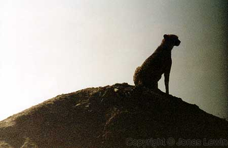
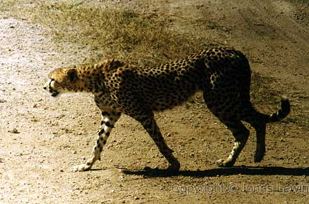

Cheetah.
|
I
did not see the big five in Tanzania. The Leopard was the one I was missing. But I got to see this Cheetah. It was hunting for some Thomson's Gazelles a few hundred meters away from this hill. Too many vehicles where gathering around this cheetah... ...and as it was walking away from us, I got the opportunity to take this photo.
|